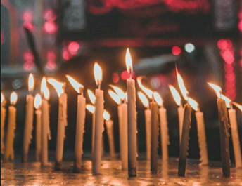

A quiet interaction
Light a candle
Shrines keep votive candles for exactly this: a small, physical gesture of remembrance that costs nothing and asks nothing back. Raise an open hand echoing the Panja carried in Muharram processions and this page will light one for you.

Camera is off.
Your video is read by your browser to look for an open hand shape. Nothing is uploaded, recorded, or sent to any server turn it off any time by closing this tab.
لبيك يا حسين
"Here I am, Hussain" words pilgrims speak on arriving at his shrine, answering a call they feel was never withdrawn.
Why a hand
The Panja, briefly
The open, five-fingered hand the Panja is one of the most recognisable emblems of Muharram, mounted on standards (alams) carried through processions. It is popularly linked to Abbas ibn Ali, Hussain's standard-bearer, and its five fingers are widely read as the Panjatan Pak: the Prophet, Ali, Fatima, Hasan, and Hussain. Raising an open hand here borrows that same gesture of presence and loyalty.
If the camera isn't for you
No camera, no problem
The "light it by hand" button does exactly the same thing without ever asking for your camera. There's no lesser way to take part here — both paths light the same candle.